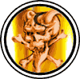

|

|
>> Содержание / Список кланов /
  CossacksofheLL CossacksofheLL
Давным-давно, еще во времена существования Запорожской Сечи, один казацкий сотник продал душу дьяволу. Однако самое страшное было в том, что он уговорил на сделку с рогатым и всех своих людей - кого сказками про неимоверные богатства и вечную жизнь, а кого - элементарными угрозами.
Долгое время темная сотня наводила страх и ужас на ближайшие селения -устраивало кровавые побоища в которых не щадили ни женщин, ни детей. Кровь лилась рекой, а дьявол, сидя в своем пекле, только руки потирал от удовольствия. Но со временем, у некоторых бойцов темной сотни начали появляться сомнения в правильности выбранного пути, однако разорвать сделку с нечистым было практически невозможно.
Шли годы... Уже и сам сотник пал в бою, и многие бойцы были убиты, но дьявол регулярно пополнял состав все новыми и новыми заблудшими душами. Место сотника занял другой воин и как это не удивительно - в его душе еще теплились остатки человечности. Он был обязан выполнять свою кровавую роль в этом мире, но в голове его уже начал созревать план разрыва сделки с нечистым. В один из дней, когда дьявол отсутствовал - отправился принимать грязевые ванны в одном из дальних подземелий ада - новый сотник предпринял отчаянную попытку спасти души своих людей. Заручившись поддержкой одного из ангелов, он вывел свою сотню на территорию светлых сил и отдал в руки святой инквизиции... Не все выдержали обряд очищения, но когда все было кончено, оставшиеся в строю, бойцы во главе со своим лидером поклялись искупить свои грехи путем истребления тьмы и сделать все что в их силах для победы светлых сил в этом мире.
Настало время перемен...
Когда-то темный клан, не нашедший общий язык со своими темными собратьям, решил идти своим путем...
И пускай на этом пути мы встретим много человеческой злости и непонимания - мы будем сражаться за наши убеждения до последней капли крови...
Официальный сайт клана: http://www.c-o-h.ru/
|
 |
|